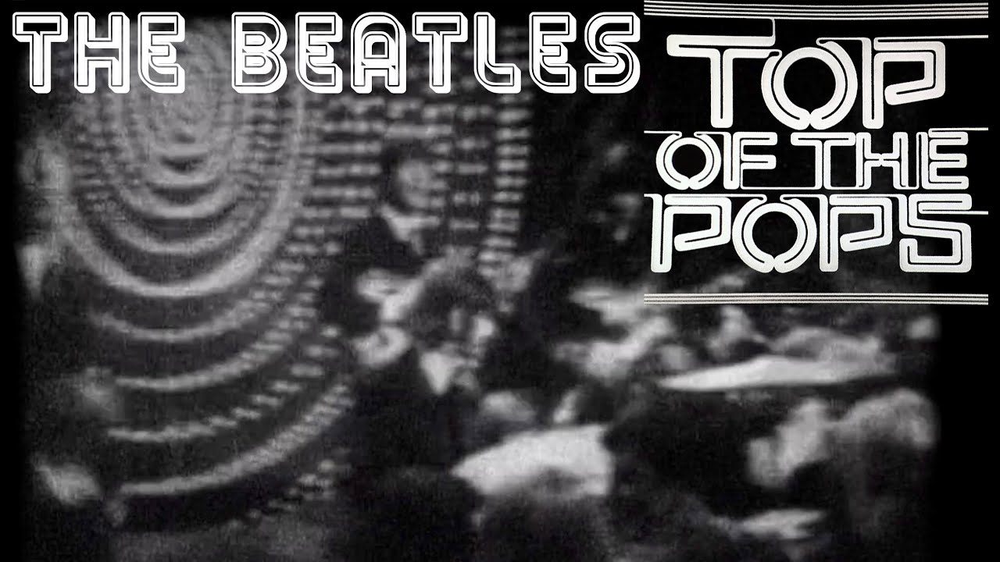

Top Of The Pops
June 16, 1966
The clip was found in 2019, which is TV footage with the Beatles playing, the BBC restored this film and posted it, we only have Rain and Paperback Writer.
You can find several versions, some with watermarks and others without, on YouTube, some with better quality and some worse.
